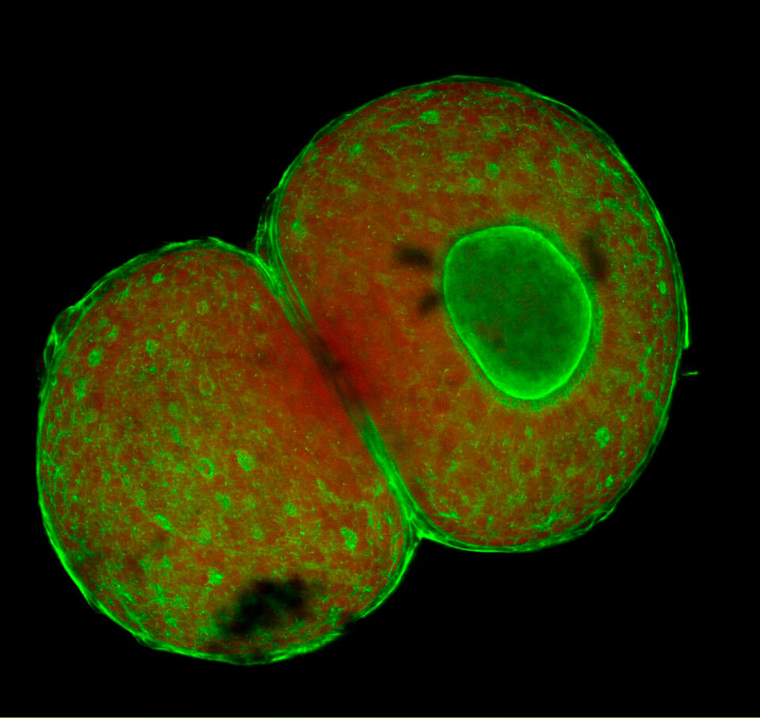
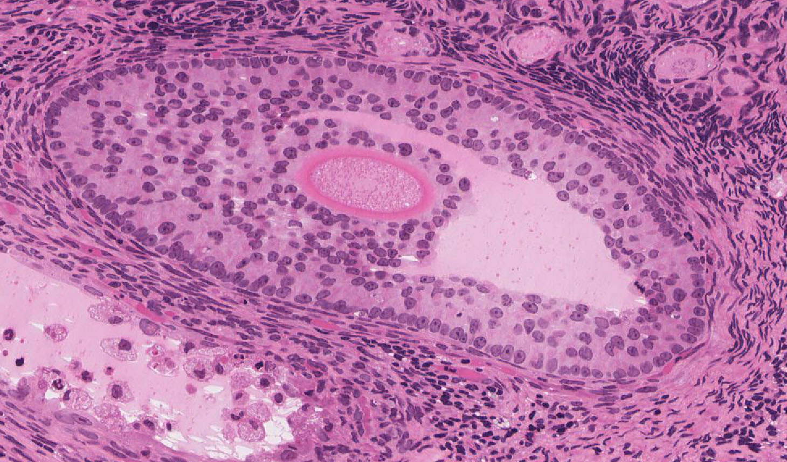
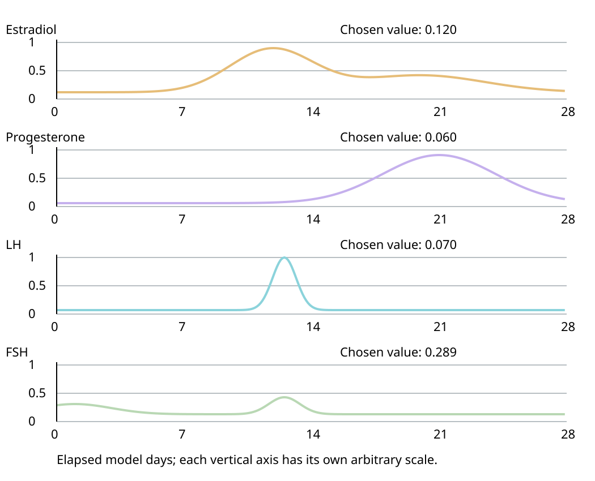
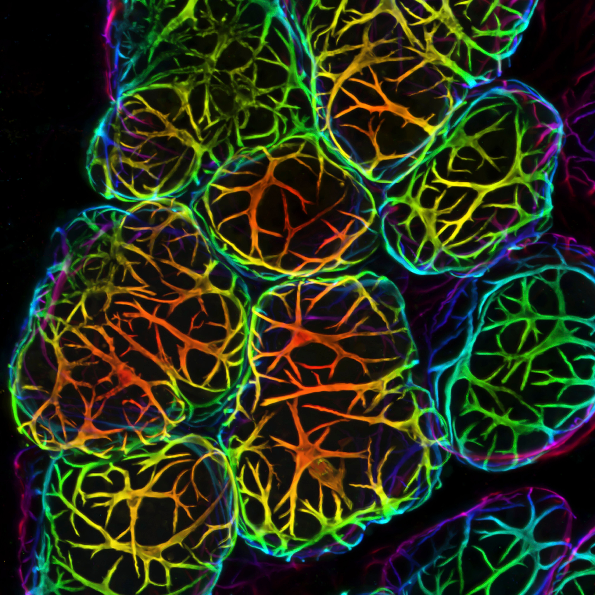
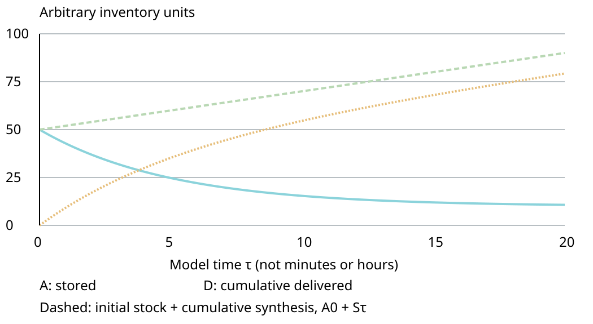
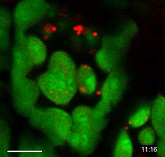

19. Female anatomy, ovarian cycles and lactation
A primary oocyte can remain arrested for years while its surrounding follicle changes shape over months. A menstrual cycle occupies weeks; the released oocyte remains fertilizable for less than about a day. These are different clocks attached to different objects. Understanding female reproduction requires keeping those objects, their compartments and their clocks separate.
Consider a second apparent paradox. Milk can be present in a mammary gland without being effectively delivered through the nipple. Making a secretion and moving an existing secretion are different processes. The same distinction appeared in Chapter 18 between producing sperm and transporting them. Here it helps explain both ovarian anatomy and lactation: a biological product, an endocrine signal and a transport route must never be represented by one interchangeable arrow.
This chapter develops the anatomy and cellular events needed for the hormonal cycle in Chapter 20. By the end, you should be able to follow an oocyte from an ovarian follicle toward the uterus without inventing a sealed ovarian duct; identify a follicle from its surrounding cell layers and antrum; count chromosome sets and DNA through the two meiotic divisions; explain why cyclic follicle selection is not the beginning of follicle growth; and separate prolactin-supported milk synthesis from oxytocin-driven milk ejection.
Lecture spine: official L43–45, including the blocked-tube activity and all closing questions. Source captions and sampled slide evidence contain consequential errors about the follicular timeline, the released egg's lifetime, ovarian counts, ovulatory membrane topology and breast ducts. Corrected mechanisms are developed below with linked sources. The two observed images are explicitly mouse preparations; the original diagrams and time-dependent panels are teaching constructions.
19.1 Organs, spaces and a follicle's surroundings
L43 02:48: organ and compartment entry; corrections and original reconstructions are identified below.
A route through spaces, not a pipe from the ovary
The paired ovaries have a gamete-producing role and an endocrine role. An oocyte is the germ cell that can contribute the maternal genome and most of the cytoplasm of a new embryo. Ovarian somatic cells support that cell and produce signals, including estrogens, progesterone and inhibins. These signals enter extracellular fluid and the circulation. The oocyte does not leave the ovary through an endocrine blood vessel.
Each uterine tube, also called a fallopian tube or oviduct, extends from the uterus toward an ovary. Its lateral end is the funnel-like infundibulum, with finger-like fimbriae. Its abdominal opening communicates with the peritoneal cavity, the potential space associated with the abdominal serous lining. The ovary and tube lie close together but do not form one sealed continuous lumen. At ovulation, the cumulus–oocyte complex is released through the ovarian surface; tubal pickup must bridge this open spatial relationship.
From the infundibulum toward the uterus, the tube widens into the ampulla, narrows into the isthmus and enters the uterine wall through its uterine part. Fertilization most often occurs in the ampullary region. Cilia on epithelial cells, tubal secretions and smooth-muscle activity contribute to transport. Cilia are small motile cell-surface projections; their coordinated beating moves nearby fluid. This is not electrical suction of the oocyte into a sealed hose. Nor does tubal transport consist solely of the oocyte swimming: the oocyte has no sperm-like propulsive flagellum. These anatomical and transport relationships are described in the owning NCBI anatomy chapter; its text informs the reconstruction, but its published figures are not reused.

The source describes normal pelvic anatomy. This is not proof of the individual’s health or fertility. Ovaries, fallopian tubes and their uterine junctions are not depicted here. This static field does not demonstrate ovulation, physiological transport, pelvic-floor movement or the endometrial cycle.
Ferreira et al. (2015), Magnetic resonance imaging of the vagina: an overview for radiologists with emphasis on clinical decision making, Radiologia Brasileira 48:249–259, Figure 1. © Colégio Brasileiro de Radiologia e Diagnóstico por Imagem; CC BY 4.0. Whole unchanged native JPEG extracted from the publication PDF. No crop, retouch, contrast adjustment, new label or calibration. Source, preparation and extraction record · Reproduction record.
The uterus is a muscular organ with a central cavity. The body and fundus form its main upper portion; the cervix is its lower portion, containing the cervical canal. That canal connects the uterine cavity to the vagina, a fibromuscular canal opening into the external genital vestibule. Thus a sperm deposited in the vagina must traverse the cervix, uterine cavity and a tube to meet an oocyte by the ordinary route. An early embryo subsequently travels toward the uterine cavity. Fertilization and implantation are different events at different usual sites.
Implantation is attachment and invasion of the developing conceptus into receptive uterine tissue. The conceptus includes the embryo and associated extraembryonic structures. Implantation is not simply the egg entering a blood vessel. Later maternal–fetal exchange is organized across placental tissues; maternal and fetal circulations are distinct, rather than a fetus being directly fed through an open maternal vessel in the uterine wall. Preparation of the endometrium begins within the cycle before a possible fertilization, so pregnancy is not needed to initiate that preparation.
Wall layers, support and mucus
Moving outward from the uterine cavity, the endometrium is the mucosa: an epithelial surface with glands and supporting stroma. Stroma is the connective cellular framework around specialized structures. The myometrium is the thick smooth-muscle wall outside the endometrium. The external perimetrium is the serosal covering where present. This nesting matters: the cavity is not enclosed first by muscle and then by a separate outer endometrium. Endometrial shedding during menstruation and myometrial contraction are different tissue processes. A deeper endometrial basal component supports regeneration after shedding of the functional component.
The uterus is mechanically supported by pelvic connective tissues and the pelvic floor, a muscular and fascial support system. A ligament in a pelvic description is a named supporting or enclosing structure, not necessarily an isolated cord whose tension alone holds the organ in place. The cervix contributes connective-tissue support and produces mucus. Its canal is a regulated passage rather than an invariant closed door. Estrogen-associated changes around the fertile part of a cycle generally favor more hydrated, sperm-permissive cervical mucus; progesterone-associated changes favor a less permissive barrier. These changes affect transport conditions, not an absolute guarantee that every sperm is admitted or excluded.
Cervical dilation during labor requires tissue remodeling and mechanical forces generated in part by uterine contractions. It is misleading to say that the cervix simply contracts and thereby dilates. A contracting circular constrictor would tend to narrow a lumen; a laboring cervix instead undergoes softening, shortening and opening in a mechanically coupled system. This chapter does not turn that conceptual correction into a labor-management model.
The vagina provides a route for menstrual outflow, intercourse and birth. Its lining is adapted to a changing mechanical and microbial environment. The vulva is the external genital region, including the mons pubis, labia, clitoris and vestibule. The urethral opening and vaginal opening are separate. Urine leaves through the urethra, not through the cervical canal or uterine tube. Keeping the urinary and reproductive openings distinct is an elementary anatomical check with consequences for every later route diagram.
Vaginal microbial ecology varies among people and across life stages. Lactobacilli often contribute to a lactic-acid-rich environment in reproductive-age individuals, but one bacterial species, one pH and one direct glycogen-to-lactate pathway do not describe every healthy vagina. In a primary study of 396 asymptomatic North American reproductive-age women, bacterial communities included both Lactobacillus-dominated groups and another group with fewer such organisms. The sampling and population limit what can be generalized; community composition alone is not a complete diagnosis. Ravel et al. (2011) supplies primary evidence for variation rather than an invariant single-microbe description. Estrogen-associated epithelial changes, microbial metabolism and other host factors interact; the present chapter does not infer an individual's infection status from a schematic pH.
Cortex, medulla and the multicellular follicle
An ovarian section is commonly described in terms of an outer cortex and an inner medulla. The cortex contains follicles embedded in ovarian stroma. The medulla contains larger vessels, nerves and connective tissue; the boundary is a useful organization rather than an impermeable wall. A growing large follicle can substantially distort the simple outer-ring picture. The diagram therefore locates structures without assigning every follicle an exact depth or diameter.
A follicle consists of an oocyte and its associated somatic support cells and extracellular structures. A primary oocyte is a meiotic cell-stage name; a primary follicle is a surrounding tissue-stage name. A primordial follicle already contains a primary oocyte. Conversely, a much larger antral follicle can still contain a primary oocyte before meiotic resumption. Confusing these two naming systems makes it appear that every increase in tissue complexity is a new meiotic division, which is false.
Granulosa cells lie around the oocyte and, later, line the fluid-filled follicular cavity. Theca cells develop around the outer follicle. These somatic compartments exchange metabolites and signals with the oocyte while remaining distinct cells. Endocrine output and oocyte development emerge from their coordination. The primary research extension below explains one way in which somatic cells regulate the oocyte's meiotic arrest; it is not evidence that the somatic cells themselves are arrested in meiosis.

The observation and reconstruction answer different questions. The image supplies real specimen appearance within its preparation limits. The reconstruction makes labels and compartment relationships explicit. A colored nucleus in this image is not a count of chromosome sets; the following genetic bookkeeping comes from the meiotic mechanism, not from reading stain brightness as a calibrated DNA assay.
19.2 Oogenesis, follicle growth and three different clocks
L44 01:27 and L45 03:26: oogenesis and follicle development; checked extensions are distinguished from the lecture timeline.
From germ cells to an arrested primary oocyte
Oogenesis concerns the female germ-cell lineage and its progression toward a mature gamete. Folliculogenesis concerns the organization and growth of the entire follicle. The two processes interact, but neither word should be used as a synonym for a monthly menstrual cycle. Before birth, primordial germ cells migrate into the developing gonadal region. Germ cells proliferate as oogonia, the mitotically dividing precursors. Mitosis expands cell number while usually preserving the diploid chromosome complement of each daughter cell.
Development includes germ-cell groups or cysts, somatic association, extensive cell loss and formation of individually enclosed follicles. Germ cells entering meiosis become primary oocytes. Following premeiotic DNA replication, they enter meiotic prophase I and establish a prolonged arrest in its diplotene stage. Chromosomes have paired and recombined earlier in prophase; they have not yet completed the reductional division that separates homologous chromosome sets. This is a long-lived arrested cellular state, not a completely metabolically inactive cell. NCBI’s female-gametogenesis chapter supports the distinction between homolog separation and sister separation; its occasionally loose follicle-stage wording is resolved here by explicit cell and tissue definitions.
The lecture's precise early developmental week labels are not used as a replacement for a verified human embryological chronology. Gestational age, conventionally counted from the last menstrual period, differs from age after fertilization. Without specifying which age is meant, a claim such as “week 4” is ambiguous. The useful anatomical conclusion here is prenatal germ-cell migration, proliferation and meiotic entry, followed by follicle assembly and attrition; no individual developmental timetable is inferred.
A primordial follicle contains a primary oocyte enclosed by a layer of flattened pregranulosa cells. “Primordial” modifies the follicle, not a separate haploid oocyte stage. The reserve is the population of such resting follicles available for later activation. Many are lost without ovulation. Atresia is degenerative loss of follicles and their contents; it can occur at multiple developmental stages. Follicular depletion therefore cannot be calculated by multiplying one ovulation per cycle by the number of cycles. Activation into growth and loss through atresia account for a much larger part of reserve history.
The slides state millions of germ cells per ovary and then present a monthly recruitment count. These are not retained as fixed human measurements. Fetal germ-cell counts, oocyte counts and primordial-follicle counts are not interchangeable denominators. Estimates depend on developmental age, sampled tissue, fixation, stereological method and whether one or both ovaries are counted. A section gives profiles, not automatically a count of distinct three-dimensional follicles. Repeatedly counting one large follicle in adjacent sections produces an overestimate unless the method corrects for it. The recent NICHD-sponsored human follicle nomenclature consensus explicitly addresses staging and density calculation; its abstract was independently retrieved, while blocked full-text access does not support a claim of having checked every recommendation.
What n and C count
Let \(n\) denote one complete haploid set of chromosomes and \(C\) the DNA amount in one unreplicated haploid genome. In a typical euploid human cell, \(n=23\) chromosomes. Euploid means that the expected complete chromosome sets are present; the table deliberately excludes aneuploid segregation errors. Chromosomes are counted by centromeres. A replicated chromosome has two sister chromatids but is still one chromosome until the sisters separate. DNA replication therefore changes \(C\), not the chromosome-set number.
| State | Sets and DNA | Human chromosomes | Chromatids |
|---|---|---|---|
| Oogonium before DNA replication | \(2n,2C\) | 46 | 46 |
| Primary oocyte after replication, including prophase I arrest | \(2n,4C\) | 46 | 92 |
| Secondary oocyte after meiosis I | \(n,2C\) | 23 | 46 |
| Maternal product after meiosis II, before replication | \(n,1C\) | 23 | 23 |
Meiosis I separates homologous chromosomes. Each product receives one member of each homologous pair, still consisting of sister chromatids. Meiosis II separates the sisters. Both divisions are asymmetric in cytoplasm: a large oocyte-lineage cell and a small polar body result. The small polar body lies in the perivitelline space, between the oocyte plasma membrane and the surrounding zona. The asymmetry preserves cytoplasmic resources in one future gamete. It does not mean that the large cell normally receives all chromosomes while the polar body receives none. Chromosome allocation is approximately balanced in a normal completed division even though cytoplasmic allocation is strongly unequal.
The first polar body may divide or degenerate. Thus drawings with a final count of three polar bodies are possible lineage illustrations, not a requirement that every human oocyte yield precisely three persistent polar bodies. Nor does oogenesis yield four equally developed ova in the way a simple symmetric meiotic cartoon yields four haploid products. For DNA accounting, every retained or lost product must be named. For cell function, the unequal cytoplasm matters independently.
When a sperm contributes its unreplicated \(n,1C\) genome, the combined maternal and paternal complements total \(2n,2C\) before the next DNA replication. Initially the parental genomes occupy distinct pronuclei; adding their DNA amounts does not assert that they have already merged into one interphase nucleus. Following replication the combined embryonic DNA amount becomes \(4C\). The panel's last counter deliberately reports only the maternal product, not the entire fertilized cell. That scope prevents a misleading jump from haploid to diploid without introducing a paternal genome.
Arrest is maintained by communication
Primary-oocyte arrest is actively supported by the follicular environment. The historical term “oocyte maturation inhibitor” in introductory accounts is not used here as the name of one established freely secreted molecule explaining all arrest. Granulosa cells and the oocyte exchange small signals through gap junctions, channels joining adjacent cell cytoplasms. Paracrine signals act locally on neighboring cells, whereas endocrine signals act through the circulation; both kinds of communication occur within ovarian regulation.
A particularly informative primary experiment used cyclic-nucleotide sensors in intact mouse follicles. Granulosa-derived cyclic GMP passed to the oocyte, inhibited its phosphodiesterase PDE3A and helped maintain cyclic AMP. A phosphodiesterase is an enzyme that breaks down a cyclic nucleotide. Inhibiting the enzyme that degrades cAMP keeps oocyte cAMP high, supporting prophase arrest. LH stimulation reduced this inhibitory support, allowing oocyte cAMP to decline and meiosis to resume. This is a causal chain with a double negative: cGMP inhibits cAMP destruction. Norris et al. (2009) directly established these relationships in mouse preparations; their measured concentrations and response times are not silently assigned to human follicles.
Compartment names resolve an apparent contradiction. LH can elevate cAMP signaling in receptor-bearing somatic cells while oocyte cAMP subsequently decreases. There is no rule that every cell in a follicle must have the same concentration change. The somatic response changes intercellular support of arrest. A single box labeled “cAMP rises” without saying where would conceal the mechanism. The teaching panel therefore marks meiotic state transitions without pretending to simulate all intracellular signaling kinetics.
Morphological stages without a false daily schedule
When a primordial follicle activates, the surrounding cells become cuboidal, the oocyte grows and the support layers expand. A primary follicle is identified here by a complete layer of cuboidal granulosa cells around its oocyte. Multiple granulosa layers produce a multilayer preantral follicle: “preantral” means that no large fluid-filled antrum has yet formed. Names such as secondary and tertiary follicle vary among teaching schemes. To avoid ambiguity, this chapter always states the visible criterion—flattened, cuboidal, multilayer preantral or antral—rather than expecting the name alone to encode a precise size or day.
The growing oocyte develops a zona pellucida, an extracellular glycoprotein matrix surrounding its plasma membrane. Extracellular means outside the cell membrane, not a second cellular membrane. The zona contributes to the organization and interactions of the oocyte and early embryo, including sperm–egg interactions. Its multiple molecular components cannot be reduced to one universally sufficient receptor that permits only human sperm in every circumstance. The present chapter does not derive species specificity or fertilization success from the thickness of a drawn ring.
Granulosa-cell extensions called transzonal projections cross this matrix and contact the oocyte. They arise from cells, not from the zona growing its own fingers. A primary mouse study used tagged cell combinations to show newly elaborated follicle-cell projections crossing the extracellular coat. El-Hayek et al. (2018), independently read as a primary abstract through EuropePMC, supports the cellular origin; its human-infertility implications remain extrapolative. Our unscaled projection lines identify topology, not their measured number, length or motion.
A basement membrane bounds the granulosa compartment. Outside it, the theca interna becomes vascular and steroidogenic: steroidogenic means capable of producing steroid hormones. The outer theca externa is more fibrous and contains contractile elements. In an intact growing follicle, blood vessels are outside the granulosa basement membrane; granulosa cells and the oocyte receive material through exchange across these boundaries rather than being each directly perfused by a capillary. Endocrine cooperation between theca and granulosa helps produce estrogen, a mechanism developed in Chapter 20. The outer layer's contractile character alone does not prove it is the sole motor that ejects an oocyte.
An antrum is a fluid-filled cavity developing within the granulosa compartment. Granulosa cells associated with the follicle wall are called mural granulosa; those supporting the oocyte form the cumulus oophorus. The cells immediately surrounding the zona form the corona radiata. The corona and cumulus are somatic cells around the oocyte, not additional oocyte membranes. Their arrangement in a section depends on section plane and developmental state. A mature preovulatory follicle is often called a Graafian follicle. Its readiness for ovulation does not imply that the oocyte has been floating freely without its cumulus support throughout maturation.
Activation, selection and ovulation have different clocks
Primordial activation initiates a long growth process. Cyclic recruitment or selection refers to an FSH-supported group of already growing antral follicles. FSH is follicle-stimulating hormone from the anterior pituitary. Usually one follicle becomes dominant in a spontaneous ovulatory cycle, while other members of the growing group undergo atresia. Dominance is not a command sent to exactly 15–20 primordial follicles in each ovary on the first day of every 28-day cycle.
The distinction is supported by Zeleznik's physiology-of-follicle-selection review: early growth precedes the short interval of cyclic selection, and primordial-to-large-preantral development has been estimated to require more than 150 days. The estimate is context-dependent and not a stopwatch for every human follicle. Its conceptual consequence is robust: the follicle selected to ovulate in a cycle began growing well before that cycle. Neither the estimate nor the lecture justifies a fixed personal follicle-growth calculator.
A useful representation therefore has three clocks. A developmental clock marks prenatal germ-cell proliferation, meiotic entry and years of possible arrest. A growth clock marks gradual folliculogenesis over months. A cycle clock marks changing pituitary and ovarian activity over weeks, with a brief periovulatory transition. Equal distances between cartoon stages do not imply equal time. A continuous animated zoom from a pelvis to an isolated follicle would add no evidence about these durations; the panels instead use explicit stage changes and separate spatial scales.

Independent Michigan manual field 5: multilayer rim and developing antral spaces; exact exported specimen, species and stain unassigned. © Regents of the University of Michigan; CC BY-NC-SA 4.0. No scale supplied. Five complete morphology fields with Native/Fit and exact source qualifiers.
| Selected state | Oocyte status | Chromosomes | Chromatids | DNA | Ploidy |
|---|---|---|---|---|---|
| 0. Primordial follicle | Primary oocyte; prophase I arrest | 46 | 92 | 4C | 2n |
| 1. Primary follicle | Primary oocyte; prophase I arrest | 46 | 92 | 4C | 2n |
| 2. Multilayer preantral follicle | Primary oocyte; prophase I arrest | 46 | 92 | 4C | 2n |
| 3. Antral follicle | Primary oocyte; prophase I arrest | 46 | 92 | 4C | 2n |
| 4. Competent preovulatory follicle | Primary oocyte; before meiosis I completion | 46 | 92 | 4C | 2n |
| 5. After meiosis I, before release | Secondary oocyte; metaphase II arrest | 23 | 46 | 2C | n |
| 6. Ovulated cumulus–oocyte complex | Secondary oocyte; metaphase II arrest | 23 | 46 | 2C | n |
| 7. Conditional completion of meiosis II | Maternal haploid product, before replication | 23 | 23 | 1C | n |
Open the controlled quantitative lab in its full reference view
Open the controlled quantitative lab
In the ordinary periovulatory sequence, the LH surge acts on a competent preovulatory follicle and initiates processes leading to resumption of meiosis I. A first polar body is extruded, leaving a secondary oocyte. The secondary oocyte proceeds into meiosis II and arrests at metaphase II, before sister chromatids separate. This is the usual state of the ovulated human oocyte. “Primary” and “secondary” here indicate meiotic stage; they are not the primary and secondary labels attached to an earlier follicle-growth scheme. Fertilization-triggered activation normally releases the second arrest, permitting completion of meiosis II and second-polar-body extrusion.
The released oocyte does not wait for another 14 days to be fertilized. Its fertilizable interval is short, commonly summarized as less than about 24 hours; sperm may persist for several days under favorable reproductive-tract conditions. MedlinePlus supports this correction to SCI-017. The remaining luteal phase is mainly the lifetime of a postovulatory ovarian endocrine structure, not the released oocyte's fertilizable lifetime. These approximate survival statements do not define a reliable personal “safe-day” rule.
19.3 Ovulation, luteinization and the conditional next step
L45 23:25: ovulation and luteal fate, including the closing prompts.
A follicle opens; the oocyte does not fuse with the ovary
Ovulation is release of the cumulus–oocyte complex through the follicular and ovarian surface. The wall is remodeled and ruptures. Local enzymatic, inflammatory-like, vascular and mechanical processes participate in this coordinated event. The mature oocyte's plasma membrane does not fuse with an “ovarian membrane” to escape. Such fusion would erase the very cellular boundary needed for the released oocyte to remain a cell. The relevant opening is in surrounding tissue, while the oocyte remains bounded by its own membrane and associated extracellular zona.
The cumulus–oocyte complex is released into the nearby peritoneal environment and can be captured by the fimbrial end of a tube. Ovulation, successful pickup, sperm transport, fertilization, embryo transport and implantation are sequentially related but distinct events. Success at one step does not demonstrate success at all the others. In particular, an ovary may still release an oocyte when a tube is blocked, because endocrine control of ovulation is not supplied through the tubal lumen.
Some drawings show a thin-walled sphere squeezing a naked egg out of a single opening. Such a sketch can identify release topology, but it omits the cumulus complex and the biology of tissue remodeling. The stage panel intentionally does not invent realistic rupture forces, blood flow or photographic motion from a static isolated mouse specimen. The decisive observation for the reader is which compartment opens and which cellular boundary remains intact.
The tissue left behind becomes an endocrine organ
After ovulation, remaining granulosa and theca cells reorganize and luteinize, acquiring the morphology and steroidogenic activity of luteal cells. The resulting corpus luteum is an ovarian structure, not a mass carried with the oocyte down the uterine tube. It becomes well vascularized and produces progesterone with estrogen and other signals. Progesterone supports the secretory transformation of an estrogen-primed endometrium. Thus an event in the ovary influences a separate tissue in the uterus through blood-borne hormone signaling.
Without a pregnancy-related rescue signal, luteal function declines: luteolysis means regression of the corpus luteum. Falling progesterone and estrogen remove support for the endometrium's functional layer, contributing to menstruation. The regressed ovarian remnant can become the fibrous corpus albicans, literally the white body. A drawn corpus albicans is therefore a later tissue fate, not a polar body and not an unfertilized ovum.
If implantation begins, trophoblast associated with the conceptus produces human chorionic gonadotropin, or hCG. Trophoblast is the extraembryonic cell lineage involved in establishing the placenta. hCG acts through the LH/hCG receptor system to sustain luteal steroid production during early pregnancy until placental production can take over. The important branch condition is an effective conceptus-to-maternal signal reaching the ovary, not fertilization instantaneously informing the ovary by contact. Endotext's endocrinology-of-pregnancy chapter describes hCG secretion during implantation and its luteal-support role. This does not imply that every fertilized oocyte implants or produces an adequate rescue signal.
A useful causal test is to remove the supposed direct tube-to-ovary feedback. Fertilization can occur at one site, implantation at another and luteal support in a third. The link back to the ovary is endocrine. The spatial separation explains why a diagram that places the corpus luteum inside the tube would be wrong even if its hormone arrow were labeled progesterone.
Cycle-day arithmetic and its assumptions
The ovarian cycle is commonly divided into a follicular phase before ovulation, the ovulatory transition and a luteal phase after ovulation. Day 1 is the first day of menstrual bleeding. Menstruation is a uterine event used as an accessible calendar anchor; it is not the creation date of the follicle that will later ovulate. Ovarian phases and uterine phases refer to different tissues, even when aligned on the same time axis.
The source compares 21-, 28- and 35-day cycles and places ovulation 14 days before the next bleeding. This is an illustrative subtraction under an assumed luteal duration, not a rule that identifies ovulation in every such cycle. The luteal phase is often less variable than the follicular phase, but it is not fixed at exactly 14 days. A primary year-long study in a selected cohort of 53 women found variability in both phases; its temperature-based phase estimates, restricted enrollment and mostly White normal-BMI population limit generalization. A much larger app-based analysis likewise found phase variation, but app users and algorithmically identified ovulatory cycles are a selected population. Henry et al. (2024) and Bull et al. (2019) were independently read as primary abstracts, not treated as full-methods verification or a personal prediction model.
Define elapsed time \(t=0\) at the onset of one menstrual bleeding episode and let \(T\) be the elapsed time to the next onset. If ovulation occurs at elapsed time \(t_o\), and the postovulatory interval to the next onset is \(L\), then the bookkeeping identity is
This is an identity once the events and interval have been measured, not a biological equation that determines an unknown \(L\). The source's subtraction yields \(t_o=7,14,21\) elapsed days for \(T=21,28,35\) if \(L=14\). These are elapsed intervals. Under an idealized onset-at-midnight convention, elapsed day 0 corresponds to labeled cycle day 1, so converting between an elapsed coordinate and an ordinal calendar-day label adds a convention-dependent offset. It is better to state the coordinate than hide a one-day ambiguity behind a precise-looking date.
If the future cycle length is unknown and the luteal interval is variable, one observed onset does not determine the future ovulation date. Even a known completed cycle length does not uniquely determine the past ovulation event without another timing measure or an assumption about \(L\). A model with an imposed 14-day luteal interval cannot establish that assumption by reproducing the arithmetic that was built into it. This is why the cycle panel below labels its schedule as illustrative and provides no fertility classifier.

| Elapsed day | Chosen interval | Estradiol | Progesterone | LH | FSH |
|---|---|---|---|---|---|
| 0 | Follicular | 0.120 | 0.060 | 0.070 | 0.289 |
| 7 | Follicular | 0.206 | 0.060 | 0.070 | 0.132 |
| 12 | Follicular | 0.899 | 0.073 | 0.762 | 0.382 |
| 13 | Periovulatory release interval | 0.824 | 0.090 | 0.762 | 0.382 |
| 21 | Luteal | 0.408 | 0.910 | 0.070 | 0.130 |
| 27.9 | Luteal | 0.143 | 0.131 | 0.070 | 0.130 |
Open the controlled quantitative lab in its full reference view
Open the controlled quantitative lab
In this diagram, sustained follicular estrogen output precedes the periovulatory gonadotropin surge; the broader endocrine feedback switch is developed in Chapter 20. LH-linked oocyte maturation and follicular rupture occur within a coordinated interval rather than a mathematically instantaneous tick. After release, the ovarian tissue becomes luteal and progesterone-rich. The synchronization is the learning objective: a cursor must not show a primordial follicle, an ovulated secondary oocyte and an active corpus luteum as if they were one contemporaneous structure.
The shared cycle-state artifact records 280 samples from elapsed 0 through 27.9 days, with displayed day and qualitative hormone values for later comparison with Chapter 20. The endpoint 28 is a boundary of this illustrative cycle, not a sampled luteal state or a newly predicted oocyte lineage. Its schema states the assumptions. Reusing this artifact can prevent independently drawn panels from contradicting one another, but reuse cannot transform chosen values into measured physiology. A future mechanistic model would need explicit sources, equations, domains, identifiable parameters and validation; those are not supplied by these curves.
19.4 Mammary anatomy, lactation and a secretion balance
L43 25:13: mammary anatomy and lactation; the inventory calculation is an original teaching construction. L43 34:08 locates the blocked-tube closing activity.
Epithelium makes milk; myoepithelium moves it
The mammary gland contains branching ducts and milk-secreting units organized in lobular tissue. An alveolus is a small secretory unit whose epithelial cells surround a lumen. The lumen is the internal fluid-containing space. Milk constituents are synthesized or transported by the secretory epithelium and enter this space. Myoepithelial cells are contractile cells around the epithelial unit, positioned between the secretory epithelium and its surrounding basement membrane. Their contraction helps displace milk into the ductal system. They are neither milk-filled ducts nor the epithelial cells that do most milk synthesis.
Ducts carry milk toward nipple openings. The gland also contains stroma, adipose tissue, blood vessels and nerves. These compartments influence support, substrate supply and signaling but are not all part of the milk lumen. A blood-borne hormone reaches cells across the tissue circulation; it is not milk flowing through a glandular duct. The nipple and surrounding areola participate in infant attachment and sensory stimulation. Effective milk transfer further depends on the interaction between infant and breast, so a hormone signal alone does not guarantee a particular delivered volume.
The source's diagram labels lactiferous sinuses as a universal milk-storage compartment and gives a fixed lobe count. Human lactating-breast ultrasound does not support treating the classic sinus drawing as a settled universal reservoir. Ramsay et al. (2005) studied 21 fully lactating women and reported compressible ducts without typical lactiferous sinuses. The independently read abstract supports correcting that schematic; it does not prove that every duct can never dilate or replace every anatomical distinction with one universal branching pattern. The present diagram therefore uses alveolar lumens and ducts without inventing an obligatory enlarged storage sac.

The basket-like staining is directly relevant to the mechanism: contractile cells can surround a secretory unit and exert force on its contents. But a static prepared image cannot show whether those cells were contracting at the instant of collection. The controlled diagram supplies route logic separately, with no claim that a moving arrow or changing inventory was measured in this specimen.
Two endocrine outputs from one sensory input
Suckling deforms sensory structures near the nipple. Afferent neural signals travel toward the central nervous system and influence hypothalamic circuits. Afferent means traveling toward a specified reference center; here the center is the central nervous system. The return pathways include hormonal outputs carried in blood. Oxytocin is not carried down the sensory afferent nerve from nipple to hypothalamus, and milk does not travel through a pituitary nerve.
Prolactin is produced by lactotroph cells of the anterior pituitary. It supports the synthesis of milk by mammary epithelial cells. Hypothalamic dopamine normally exerts strong inhibitory control over prolactin release through the pituitary portal circulation. Suckling-associated reduction of this inhibition contributes to prolactin release. The dominant introductory explanation is therefore disinhibition: removing an inhibitory input permits more output. A single unqualified “prolactin-releasing factor” arrow misses that control architecture. NCBI's prolactin physiology chapter supports this distinction and the anterior-pituitary source.
Oxytocin is synthesized in hypothalamic neurons. Their axons carry the peptide toward terminals in the posterior pituitary, from which it is released into blood. The posterior pituitary stores and releases this hypothalamic product; it is not the principal site of its synthesis. Oxytocin reaching mammary tissue promotes myoepithelial contraction and milk ejection, often called let-down. This is a movement of milk already present in the secretory system, distinct from manufacturing new milk. NCBI's breast-milk physiology chapter separates prolactin-supported synthesis from oxytocin-dependent ejection.
Pregnancy-associated hormones prepare mammary tissue, while the fall in placental steroid support after placental delivery permits the transition to copious secretion in the presence of prolactin. Milk synthesis also depends on substrate supply, viable secretory tissue and local regulation associated with milk removal. Thus “more prolactin” is not a complete one-variable law for milk output. The illustration isolates two causal functions without fitting a clinical lactation model or implying that anyone's feeding outcome can be inferred from one hormone.
The sensory/ejection arrangement is often called positive feedback: suckling evokes ejection, which can facilitate milk transfer and continued suckling. Positive feedback means that an output can reinforce an initiating process. It does not mean that the loop grows without limit. Infant behavior, removal of stimulation, available milk, neural regulation and local gland state bound the process. There is also feedback regulation within the prolactin system, including prolactin-associated dopamine responses. One schematic loop cannot be assumed to contain every stabilizing pathway.
Lactation can suppress reproductive-axis activity, but neither this diagram nor absence of a visible menstrual bleed establishes an individual contraception rule. This chapter uses the endocrine connections to explain mechanism and keeps clinical decisions outside the inventory exercise.
A bounded computation: contents versus delivery
To quantify the distinction between making and moving a secretion, define \(A(\tau)\) as stored milk in an idealized gland compartment and \(D(\tau)\) as cumulative delivered milk since the start of an interval. The coordinate \(\tau\) is artificial teaching time. Content is measured in arbitrary volume units, not a personal breast volume. Let \(S\geq0\) be a constant synthesis input in volume units per teaching-time unit, and let \(k\geq0\) be an ejection/removal coefficient per teaching-time unit. The chosen outflow law is \(kA\). It assumes a well-mixed accessible inventory and an open removal route; real pulsatile ejection, distributed ducts, compliance and infant mechanics are omitted.
The first equation is input minus output for stored content. The second accumulates the same output. Adding them cancels the internal transfer: \(d(A+D)/d\tau=S\). Integrating gives \(A+D=A_0+S\tau\). Every unit leaving storage appears in delivery, and every new unit comes from synthesis. That conservation identity is a stronger check than whether an animated bar looks plausible.
For positive \(k\), multiply the first equation by \(e^{k\tau}\) to obtain \(d(Ae^{k\tau})/d\tau=Se^{k\tau}\). Integration and application of the initial condition give the exact solution. If \(k=0\), the division by \(k\) is not used; the original equations directly give a linear increase with no delivery:
For \(k>0\), the hypothetical steady content is \(A_*=S/k\). At that state, outflow \(kA_*\) equals synthesis \(S\). A large inventory is not synonymous with a large flow: for \(k=0\), storage can rise while delivery remains zero. Conversely, when \(S=0\) and \(A_0>0\), ejection can deliver previously stored milk even though new synthesis is absent. Setting both to zero leaves content unchanged and delivery zero. These limiting cases make the physiological distinction testable without pretending that \(S\) is a measured prolactin concentration or \(k\) a measured oxytocin concentration.


Selected observed frame 600: lactating mouse mammary tissue after experimental oxytocin, GFP cytoplasm green and BODIPY lipid red. Original 20 µm bar and 11:16 source clock retained; green is not a direct myoepithelial label. Masedunskas et al. (2017), Video 5, CC BY-NC-SA 3.0. Source clock is unrelated to model time τ.
Open the independent observed lactation movie in its full reference view
Open the independent observed lactation movie
| S | k | τ=0: A / D | τ=10: A / D | τ=20: A / D |
|---|---|---|---|---|
| 0 | 0 | 50.000 / 0.000 | 50.000 / 0.000 | 50.000 / 0.000 |
| 0 | 0.2 | 50.000 / 0.000 | 6.767 / 43.233 | 0.916 / 49.084 |
| 2 | 0 | 50.000 / 0.000 | 70.000 / 0.000 | 90.000 / 0.000 |
| 2 | 0.2 | 50.000 / 0.000 | 15.413 / 54.587 | 10.733 / 79.267 |
Open the controlled quantitative lab in its full reference view
Open the controlled quantitative lab
The computation is deliberately modest. Its strength is exact content accounting and interpretable limiting cases. It cannot determine why a real individual has low milk transfer, because similar delivery can arise from different synthesis, storage, ejection and removal conditions. Such an inverse problem needs additional observations and a model appropriate to those observations. Solving this first-order equation more precisely would not supply missing physiological information.
Returning to the source's late activity
The lecture asks what happens if both uterine tubes are completely blocked. Under an idealized ordinary reproductive route, sperm ascending from the uterus cannot meet the released oocyte across a completely occluded tube, so ordinary tubal fertilization is prevented. The ovaries need not stop their endocrine cycles; the obstruction interrupts a luminal encounter route. One-sided obstruction is a different topology, and assisted reproductive procedures can bypass parts of the ordinary route. The statement is a mechanism exercise, not a diagnosis, prognosis or treatment recommendation for a person with suspected tubal disease.
This question reinforces the chapter's central distinction. An open blood route carrying ovarian hormones cannot substitute for an open reproductive lumen carrying gametes. Likewise, an intact prolactin signal cannot by itself substitute for effective milk ejection and removal. The same compartmental reasoning applies across two anatomically distant systems.
19.5 Worked problems
Exercise 19.1 — Find the broken connection
A diagram draws a sealed duct from each ovary to the corresponding tube, places fertilization inside the uterine endometrium and shows urine exiting through the vagina. Correct all three relationships. In a separate idealized case, both uterine-tube lumens are completely occluded but ovarian vessels remain patent. Which route is interrupted and which function can remain?
Worked solution
The ovary is not connected to the tube by a sealed gamete duct. A released cumulus–oocyte complex crosses the nearby peritoneal space and is picked up at the fimbrial/infundibular end. Fertilization usually occurs in the ampulla; implantation later occurs in receptive endometrium. Urine exits through a separate urethral opening in the vestibule. These corrections distinguish adjacency, luminal continuity and a later tissue interaction.
Complete bilateral tubal occlusion interrupts the ordinary sperm–oocyte encounter route. Sperm cannot pass from uterus through an occluded tube to meet the oocyte. Ovarian hormone production and ovulation can remain because the vessels and endocrine control are distinct from the blocked lumen. This idealized statement does not quantify an individual's fertility or address incomplete obstruction, one-sided disease or assisted reproduction.
Exercise 19.2 — Follow DNA without losing the polar bodies
Start with a euploid primary oocyte after DNA replication. Give its chromosome, chromatid and DNA amounts. Follow meiosis I and then meiosis II, assuming the first polar body neither divides nor loses DNA during this accounting interval. Check total maternal DNA. Then add one unreplicated sperm genome without including polar bodies in the embryonic total.
Worked solution
The primary oocyte is \(2n,4C\):46 chromosomes and 92 chromatids. After meiosis I, the secondary oocyte is \(n,2C\),23 chromosomes and 46 chromatids; the first polar body is also \(n,2C\). The DNA balance is \(4C=2C+2C\). Unequal cytoplasm does not change this normal chromosome allocation.
After meiosis II, the maternal product and second polar body each have \(n,1C\),23 chromosomes and 23 chromatids. Keeping the first polar body at \(2C\) gives total maternal DNA \(4C=1C+1C+2C\). If the first polar body divides, its two products sum to the same \(2C\) before any loss. A different persistent cell count therefore does not violate DNA accounting.
Adding the sperm's \(n,1C\) to the maternal \(n,1C\) gives \(2n,2C\) across the two unreplicated parental genomes. This excludes the polar bodies and does not assert immediate fusion of pronuclei. The model's last displayed counter remains maternal-only \(n,1C\); the scope must change explicitly before calling the whole fertilized cell diploid.
Exercise 19.3 — Identify the tissue stage and the cell stage
One ovarian profile contains an oocyte enclosed by flattened pregranulosa cells. A second contains a fluid antrum, mural granulosa, cumulus and an oocyte still in prophase I. Name both follicles and both oocytes. Explain why neither profile establishes the number of days until ovulation, and correct the phrase “zona projections feed the egg.”
Worked solution
The first is a primordial follicle containing a primary oocyte. The second is an antral follicle also containing a primary oocyte, since prophase I arrest precedes completion of meiosis I. “Primary oocyte” therefore spans multiple follicular morphologies. The presence of an antrum says something about tissue organization, not that the oocyte has become secondary.
A single section does not establish a trajectory, a growth rate or eventual survival. Primordial activation and early growth occur on a long timescale, while cyclic selection acts on already growing antral follicles; atresia may terminate either path. A countdown from one section would require additional longitudinal evidence and assumptions.
Transzonal projections are extensions of granulosa/cumulus cells traversing the extracellular zona to contact the oocyte. They support intercellular communication and exchange; the zona itself is not a cell growing feeding fingers. The basement membrane further separates this inner compartment from the vascular theca outside.
Exercise 19.4 — How much does a cycle length tell you?
Use elapsed time from bleeding onset. For a completed 28-day cycle, first assume a 14-day postovulatory interval. Then allow that interval to lie anywhere from 11 to 15 days solely as an uncertainty exercise. Compute the corresponding ovulation coordinate. Does this date a future ovulation from a newly observed bleeding onset? Does the postovulatory interval represent the egg's fertilizable lifetime?
Worked solution
The identity \(t_o=T-L\) gives \(t_o=28-14=14\) elapsed days under the first assumption. With \(11\leq L\leq15\), subtracting the endpoints reverses their order: earliest \(t_o=28-15=13\), latest \(t_o=28-11=17\). The result is \(13\leq t_o\leq17\) elapsed days. Under the idealized day-label convention these correspond to ordinal labels 14–18, which illustrates why coordinates must be stated.
The interval 11–15 days was supplied for arithmetic and is not a validated population bound. The future \(T\) is also unknown at a new onset. Consequently the exercise cannot identify a future fertile interval or establish a contraception rule. Even for the completed cycle, its answer inherits the assumed \(L\).
The luteal interval refers to postovulatory ovarian endocrine function and the next menstrual onset. The released oocyte remains fertilizable for less than about 24 hours, not for the whole luteal phase. Sperm persistence is a separate timescale. Calendar subtraction cannot erase these biological distinctions.
Exercise 19.5 — Resolve all three closing prompts
Define zona pellucida, explain the corpus luteum's role in early pregnancy and state the function of fimbriae. Place each structure in its correct compartment. Then compare a cycle with no effective rescue signal to one with implantation-associated hCG.
Worked solution
The zona pellucida is the extracellular glycoprotein matrix around the oocyte plasma membrane; it is neither the ovarian wall nor a layer of the uterine tube. It helps organize oocyte/embryo interactions, including sperm–egg interactions, without being reducible to one universal species-selective receptor.
The corpus luteum remains in the ovary after follicular rupture. Its progesterone-rich output supports the prepared endometrium through blood-borne signaling. Without effective rescue, luteal steroid output declines and the structure regresses, later leaving a corpus albicans. With implantation-associated trophoblastic hCG reaching maternal circulation, luteal activity is maintained during early pregnancy. Fertilization alone does not instantaneously communicate this signal or guarantee implantation.
Fimbriae are projections at the infundibular end of the uterine tube that aid capture of the released complex across the nearby open peritoneal relationship. They are not a sealed tube attached to the oocyte. The three answers occupy respectively the oocyte surroundings, ovarian tissue and tubal entrance. Their spatial separation is part of the mechanism.
Exercise 19.6 — Synthesis without ejection, then release
In the synthetic inventory model start with \(A_0=50\) volume units. Synthesis is \(S=2\) units per teaching-time unit. For five time units let \(k=0\). Then reset the interval clock, keep synthesis unchanged and set \(k=0.2\) per time unit for another five units. Find stored and delivered amounts in each interval and across the whole experiment. Explain the distinction between constant storage and zero flow.
Worked solution
In the first interval no material leaves through the modeled route. Thus \(A(5)=50+2(5)=60\) and \(D(5)=0\). Sixty units in storage does not imply any delivery.
Use 60 as the initial content of the second interval. Its steady content is \(S/k=2/0.2=10\). The exact solution gives \(A(5)=10+(60-10)e^{-0.2(5)}=10+50e^{-1}\approx28.394\). Delivery in this interval is \(D=60+2(5)-28.394\approx41.606\). The first interval delivered nothing, so cumulative delivery across both intervals remains 41.606.
Across the whole experiment synthesis added 20 units, making 70 available from the original 50 plus new input. Final storage plus total delivery is \(28.394+41.606=70\). This closes the balance. At the later hypothetical steady state, storage would remain 10 while synthesis and delivery would each be 2 units per time unit. Constant content can therefore coexist with continuous flow. None of these arbitrary volumes or time units estimates an individual's milk production or infant intake.
19.6 Reproduce and challenge the teaching construction
Run python code/ch19_reproduction.py --check --export. The standard-library script checks nonnegative inventories, exact content balance, zero-input and zero-ejection limits, small positive coefficients, invalid domains and all 280 cycle samples. The exported JSON state table can be read independently. The browser's shared model and SVG renderer uses the same formulas; it rejects nonfinite, negative and out-of-range inputs and unrepresentable total inputs or outputs rather than silently drawing them. For tiny positive \(k\), the implementation evaluates the source gain as \(S\tau\,\phi(k\tau)\), where \(\phi(z)=-\operatorname{expm1}(-z)/z\) tends to 1 as \(z\to0\). This avoids forming an overflowing \(S/k\) when the actual short-interval solution is finite. The analytic law is unchanged; last-bit roundoff is bounded to its physical inventory interval.
First select “synthesis only” in the lactation panel. Stored content rises while delivery remains zero. Next select “ejection only”: stored content falls and delivery rises even though new synthesis is zero. Finally select both. These interventions distinguish mechanisms more clearly than a single replay with every pathway active. The pathway arrows represent neural or hormonal connections; the inventory output is a mathematical example, not an observed time series.
Next seek the maturation panel immediately before and after meiosis I. The follicular context has changed gradually, but the completed-state counter changes from \(2n,4C\) to \(n,2C\) only at the meiotic transition. Seek to the conditional postfertilization state and ask what DNA has been omitted. Adding polar-body and paternal contributions requires changing the accounting boundary; it cannot be inferred by making the oocyte glyph larger.
Finally compare the ovarian-cycle cursor with the long growth descriptions. Changing the presentation speed does not change any biological interval. A cycle curve with an LH surge cannot demonstrate the months required for early growth, and a static follicle image cannot supply an instantaneous hormone concentration. Each visual answers a specific question with its own evidence boundary.
19.7 Sources and limits
The chapter follows official L43–45 in substantive coverage while replacing misleading counts, timelines and route arrows. Full captions and their closing material were read. Source-video evidence here is a bounded inherited audit of 11 contact sheets, 179 sampled stills and 21 repeated native 640×360 frames; continuous viewing and independent repeat inspection of every source frame are not claimed. The author separately acquired the two catalogue images and inspected their pixels. The high-resolution mammary image was seen as a whole resized display and as an unresized 1200×1200 crop. Acquisition and pixel provenance are recorded in the image record and credits and license.
Primary studies are cited at the relevant claims, with mouse, human cohort, abstract-only and preparation limits identified. Zeleznik's 2004 follicle-selection review is an explanatory synthesis; its early-growth estimate is not a personal clock. The human-follicle consensus and three additional primary abstracts were independently retrieved through EuropePMC after direct pages were blocked or empty. No full-text methods access is claimed for those records. NCBI anatomy and physiology chapters provide authoritative contextual descriptions; their external artwork was not copied.
The regional MRI uses a gel-distended vagina and does not depict ovaries or tubes. The separately linked ovarian fields retain their exact source-assignment uncertainty; only the vascular-theca field is explicitly human slide 235. The two earlier catalogue micrographs and the new observed release/lactation movies are prepared mouse specimens, not human longitudinal evidence. Human oocyte inventories are independent completed-state bookkeeping; hormone functions have separate arbitrary scales and the milk equation is a synthetic one-pool conservation model. None supplies an individual diagnosis, hormonal dose or fertility prediction.
Observed/reference updates on 9 November 2026 use separately credited native primary/owning-source images and movies, with source-specific preparation, rights and timing limits at each figure. The new quantitative labs preserve their declared synthetic assumptions; they are not anatomical measurements or patient predictions. The historical 4 November checks and earlier visual-review records remain bound to their original artifacts. A regional image does not demonstrate unrelated biological mechanisms.